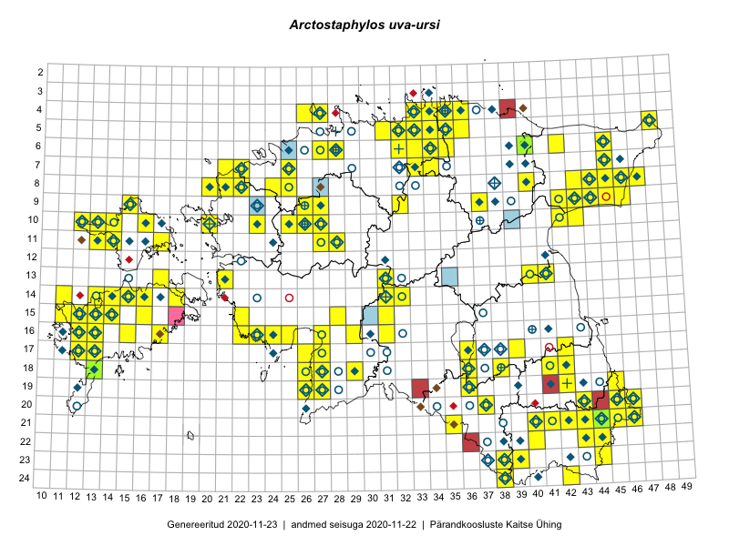

Arctostaphylos uva-ursi
Uuendatud: 2016-12-01
Kaardile koondatud taksonid: Arctostaphylos uva-ursi (L.) Spreng.

Kaart põhineb 176 kirjel.
Kuvatud viited 20 esimesele andmebaasikirjele, ülejäänud PlutoFis
- Thea Kull: 2015-04-27: 07-45: ala
- Toomas Kukk: 2015-06-23T14:30Z: 21-45: ala
- Malle Leht: 2015-08-02: : ala
- Peedu Saar, Toomas Kukk: 2015-05-26: 10-16: ala
- Rein Kalamees, Kersti Püssa: 2015-08-09: 05-31: ala
- Toomas Kukk, Kersti Tambets, Sten Mander, Janika Sammasto, Timo Luhamäe: 2014-07-30: 21-45: ala
- Peedu Saar, Liina Oja: 2015-06-09: 17-27: ala
- Peedu Saar, Sander Laherand: 2015-05-30: 06-42: ala
- Peedu Saar, Liina Oja: 2015-07-20: 08-44: ala
- Peedu Saar, Liina Oja: 2015-07-22: 08-45: ala
- Peedu Saar: 2015-08-11: 13-41: ala
- Mall Hiiemäe: 2015: 08-43: ala
- Mall Hiiemäe: 2009: 09-43: ala
- Mall Hiiemäe: 2015: 13-40: ala
- Rein Kalamees, Kersti Püssa: 2015-06-07: 06-32: ala
- Rein Kalamees, Kersti Püssa: 2015-06-06: 05-34: ala
- Rein Kalamees, Kersti Püssa: 2015-09-11: 06-34: ala
- Rein Kalamees, Kersti Püssa: 2015-09-12: 04-33: ala
- Rein Kalamees, Kersti Püssa: 2015-08-16: 05-34: ala
- Rein Kalamees, Kersti Püssa: 2015-09-13: 06-32: ala